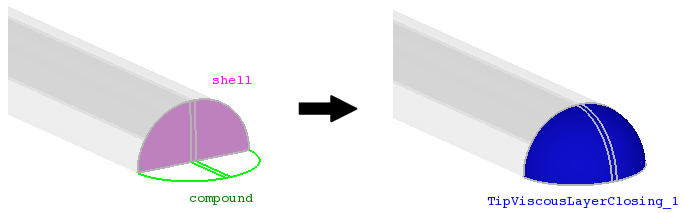

cfdmsh 4.0 documentation
cfdmsh 4.0 documentation cfdmsh 4.0 documentation


Close a tip viscous layer.
This function sorts out the edge from the input shell which has to be extended, then create filling edges and fillings from them, as well as boundary faces. Then, it puts these new faces into compounds which are glued and used to create shells and solids. Finally, it detects the presence of middle face in the input shell and creates filling edges, fillings, boundary faces, a face compound that is also glued and used to create the middle solid.
def CloseTipViscousLayer( shell_and_compound = [None], np = 20, tol = 1e-7, add = True, infa = False, dim = 3 ):

| Name | Description | Type | GUI selection [?] | Selection by name [?] | Recursive [?] | Default value |
|---|---|---|---|---|---|---|
| shell_and_compound | the shell to close and its guiding edge compound. | List of 1 Shell + 1 Compound of Edges |
yes | yes | - | [None] |
| np | See here. | Integer | - | - | - | 20 |
| tol | See here. | Float | - | - | - | 1e-7 |
| add | See here. | Boolean | - | - | - | True |
| infa | See here. | Boolean | - | - | - | False |
| dim | See here. | Integer | - | - | - | 3 |
| dim Value [?] | single Value [?] | Type | Number | Name |
|---|---|---|---|---|
| 1 | - | Compound of Edges | 4 or 6 | "TipViscousLayerClosing (Edges)" |
| 2 | - | Compound of Faces | 2 or 3 | "TipViscousLayerClosing (Faces)" |
| 3 | - | Compound of Solids | 1 | "TipViscousLayerClosing" |
from cfdmsh import * # To adapt to the cfdmsh installation method
vertex1 = geompy.MakeVertex(0, 75, 0)
vertex2 = geompy.MakeVertex(0, 10, 0)
vertex3 = geompy.MakeVertex(0, -10, 0)
vertex4 = geompy.MakeVertex(0, -75, 0)
vertex5 = geompy.MakeVertex(0, 10, 75)
vertex6 = geompy.MakeVertex(0, -10, 75)
curve1 = geompy.MakePolyline([vertex1, vertex2, vertex3, vertex4])
curve2 = geompy.MakePolyline([vertex1, vertex5, vertex6, vertex4])
edge1 = geompy.MakeEdge(vertex2, vertex5)
edge2 = geompy.MakeEdge(vertex3, vertex6)
face = geompy.MakeFaceWires([curve1, curve2], False)
shell = geompy.MakePartition([face], [edge1, edge2])
AddToStudy(shell, "shell")
compound = CloseViscousLayer(curve1, face = face, add = False)
AddToStudy(compound, "compound")
closing = CloseTipViscousLayer([shell, compound])
closing_edges = CloseTipViscousLayer([shell, compound], dim = 1)
The input shell has to contain 2 faces having the shape of triangles or ellipse quarters and an optional middle face being a quadrangle. The edge compound has to have all the characteristics of a compound build with the CloseViscousLayer function.
cfdmsh 4.0 documentation
tougeron-cfd.com © 2016